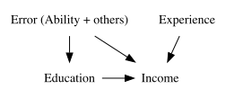
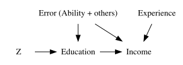
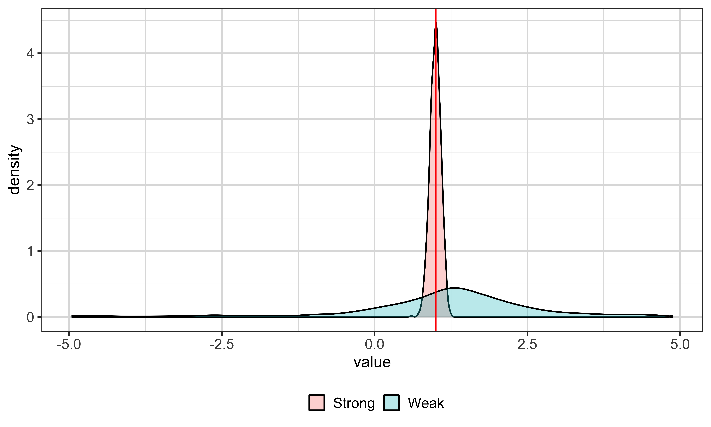

Instrumental variables address a setting where the explanatory variable of interest is correlated with the structural error. That correlation can come from omitted variables, selection, reverse causality, or measurement error. OLS then cannot separate the regressor’s causal effect from unobserved determinants of the outcome. IV does not make the original regressor exogenous. It searches for a distinct source of variation in that regressor that is unrelated to the outcome error.
Endogeneity
E[u\mid x_1,\dots,x_k]\ne0
The zero-conditional-mean assumption fails: the error term is systematically related to at least one explanatory variable.
Endogenous independent variable
If an explanatory variable x_k is correlated with the error term, we call x_k an endogenous explanatory variable.
The diagram represents our education example. Education may affect income, which is the arrow we want to estimate. Ability and other omitted factors affect both education and income, creating a backdoor path from education to income. Experience is included as an observed control. Because the common cause in the error points into both education and income, a regression of income on education and experience generally mixes the causal education effect with confounding from ability.
You want to estimate the causal impact of education on income.
Causal diagram

An instrument Z supplies variation that reaches income through education. Three ideas must hold. Relevance requires an arrow from Z to education after controls. Exclusion rules out a direct Z-to-income arrow. Exogeneity rules out an unobserved common cause linking Z to income. Under those conditions, the education variation induced by Z avoids the ability backdoor path. The diagram clarifies why predicting education is necessary but insufficient: a strong predictor that also affects income directly is not a valid instrument.
We want to find a variable like Z in the diagram below:

In the structural model, x one is endogenous and x two is an included exogenous control. We seek excluded instruments Z that predict x one but belong outside the outcome equation. The first stage isolates the component of x one explained by Z and the exogenous controls. The second stage uses that component to estimate beta one. The phrase instrument-induced variation is important: IV identifies the effect for changes in x one generated by the instrument, subject to the validity assumptions.
The Model
y=\beta_0 + \beta_1 x_1 + \beta_2 x_2 + u
Idea (very loosely put)
Find one or more instrumental variables that are excluded from the structural outcome equation but predict the endogenous variable.
Use the instruments Z to isolate variation in x_1 that is unrelated to the structural error.
Use that instrument-induced variation to estimate the causal effect of x_1 on y.
The first stage regresses the endogenous variable on every excluded instrument and every exogenous variable included in the structural equation. Including x two in both stages is essential; leaving it out of the first stage generally changes the estimator and can invalidate the projection. The fitted x one is the portion predictable from this instrument set. Relevance means the excluded instruments contribute predictive power after x two is held fixed.
Idea
Project the endogenous variable onto the instruments and all included exogenous variables.
Step 1: mathematically
x_1 = \alpha_0 + \sigma_2 x_2 + \alpha_1 z_1 +\alpha_2 z_2 + v
\widehat{x}_1 = \widehat{\alpha}_0 + \widehat{\sigma}_2 x_2 + \widehat{\alpha}_1 z_1 + \widehat{\alpha}_2 z_2
Conceptually, replace x one with its fitted value and regress y on that fitted component plus x two. This reproduces the 2SLS slope coefficient. However, ordinary OLS software in this manual second stage treats the fitted regressor as if it were observed data and reports the wrong uncertainty. A dedicated IV command accounts for how the fitted values were constructed and produces the correct 2SLS variance estimate. Use the two steps to understand the estimator, not as the recommended implementation.
Idea
Use the fitted component of x_1 to estimate the structural coefficient \beta_1.
Step 2: Mathematically
Conceptually, regress y on \widehat{x}_1 and x_2:
y= \beta_0 + \beta_1 \widehat{x}_1+ \beta_2 x_2 + \varepsilon
This reproduces the 2SLS coefficient, but a manually run second-stage OLS regression does not report the correct 2SLS standard errors. In practice, estimate both stages with an IV command.
Education is endogenous because unobserved ability affects wages and is related to schooling. Experience is assumed exogenous for this illustration. IQ and number of siblings are candidate instruments, not automatically valid ones. IQ is likely related to ability, which threatens exogeneity and exclusion. Siblings may predict schooling through family resources, but family size could also proxy for background that affects wages directly. The example first demonstrates computation; later slides evaluate whether such variables deserve to be instruments.
Model
\log(wage)=\beta_0+\beta_1 educ+\beta_2 exper+v, \qquad v=\beta_3 ability+e
Instruments (Z)
Suppose you are considering the following candidate instruments for illustration:
The first-stage equation predicts education using experience, IQ, and siblings. The code estimates that model and stores each person’s fitted years of education. Inspecting educ_hat helps make the projection concrete: it is not a cleaned version of education for each individual, but a linear prediction from the instrument set. The excluded instruments need to explain enough residual variation in education after experience for the second stage to be informative.
Regress educ on exper, IQ, and sibs:
\begin{align*} educ = \alpha_0 + \alpha_1 exper + \alpha_2 IQ + \alpha_3 sibs + r \end{align*}Use the coefficient estimates on \alpha_0, \alpha_1, \alpha_2, and \alpha_3 to predict educ as a function of exper, IQ, and sibs.
\begin{align*} \widehat{educ} = \widehat{\alpha_0} + \widehat{\alpha_1} exper + \widehat{\alpha_2} IQ + \widehat{\alpha_3} sibs \end{align*}The manual second stage uses log wage—not wage—because that is the specified structural outcome. Its coefficient on predicted education equals the 2SLS coefficient when the stages are constructed correctly. The printed OLS standard error is not valid for IV inference. This distinction is easy to miss because the regression runs without warning. Later we use feols IV syntax, which estimates the same coefficient and computes an appropriate variance in a single call.
Use \widehat{educ} in place of educ to estimate the model of interest:
\begin{align*} \log(wage) = \beta_0 + \beta_1 \widehat{educ} + \beta_2 exper + \varepsilon \end{align*}The coefficient on educ_hat illustrates the second-stage coefficient. Do not use the standard error from this manually fitted regression; the IV implementation below computes the correct 2SLS variance estimate.
IV consistency rests on assumptions about the instruments, just as OLS consistency rests on assumptions about regressors and errors. The two broad requirements are relevance and validity. Relevance asks whether the excluded instruments move the endogenous variable after controls. Validity combines exclusion and exogeneity: the instruments must affect the outcome only through the endogenous regressor and must be unrelated to the structural error. A convincing IV study needs both statistical diagnostics and a substantive research-design argument.
Just as OLS requires assumptions for consistency, IV requires conditions on the proposed instruments.
Estimation Procedure
Step 1: \widehat{x}_1 = \widehat{\alpha}_0 +\widehat{\sigma}_2 x_2 + \widehat{\alpha}_1 z_1 + \widehat{\alpha}_2 z_2
Step 2: y = \beta_0 + \beta_1 \widehat{x}_1+ \beta_2 x_2 + \varepsilon
Important question
What are the conditions under which IV estimation is consistent?
The instruments Z must be relevant and valid, as discussed next.
If the excluded instruments have zero first-stage coefficients, fitted x one contains nothing beyond the included exogenous controls. There is then no independent variation with which to identify beta one. Nonzero prediction is relevance, but useful IV also requires adequate strength. In finite samples, a weak first stage can make 2SLS unstable and conventional confidence intervals unreliable even if a significance test rejects exact zero. We will return to diagnostics near the end of the lecture.
Estimation Procedure
Step 1: \widehat{x}_1 = \widehat{\alpha}_0 +\widehat{\sigma}_2 x_2 + \widehat{\alpha}_1 z_1 + \widehat{\alpha}_2 z_2
Step 2: y = \beta_0 + \beta_1 \widehat{x}_1+ \beta_2 x_2 + \varepsilon
Question
What happens if Z has no power to explain x_1 (\alpha_1=0 and \alpha_2=0)?
That is, \widehat{x}_1 contains no information beyond what x_2 already provides.
Relevance requires the excluded instruments to predict x_1 after controlling for the other exogenous variables. Statistical significance is a useful diagnostic, but instruments must also be sufficiently strong for reliable conventional IV inference.Model of interest
y = \beta_0 + \beta_1 x_1 + \beta_2 x_2 + u
Estimation Procedure
Step 1: \widehat{x}_1 = \widehat{\alpha}_0 +\widehat{\sigma}_2 x_2 + \widehat{\alpha}_1 z_1 + \widehat{\alpha}_2 z_2
Step 2: y = \beta_0 + \beta_1 \widehat{x}_1+ \beta_2 x_2 + \varepsilon
The first-stage projection splits x one into a fitted component and a residual. Substitute that decomposition into the structural equation. The conceptual second-stage disturbance contains the original outcome error plus beta one times the first-stage residual. OLS on fitted x one requires that fitted component to be unrelated to this composite disturbance. Projection makes the fitted value orthogonal to the first-stage residual in sample, but we still need the instruments and included controls to be unrelated to the structural error u.
The first stage decomposes x_1 into its fitted component and residual:
\begin{align*} x_1 = \widehat{x}_1 + \widehat{\varepsilon} \end{align*}where \widehat{\varepsilon} is the first-stage residual.
Substituting x_1=\widehat{x}_1+\widehat{\varepsilon} into the model of interest gives
\begin{align*} y & = \beta_0 + \beta_1 (\widehat{x}_1 + \widehat{\varepsilon}) + \beta_2 x_2+ u\\ & = \beta_0 + \beta_1 \widehat{x}_1 + \beta_2 x_2+ (\beta_1\widehat{\varepsilon} + u) \end{align*}Thus, in the conceptual second-stage equation, the composite error is \beta_1\widehat{\varepsilon}+u.
Question
What condition is needed for the second-stage coefficient to be consistent?
The algebra isolates the remaining requirement. Because the fitted value is built from x two, z one, and z two, those variables must not carry information about u. Orthogonality to the first-stage residual follows mechanically from least squares; orthogonality to the structural error does not. It comes from the design. This is why an excellent predictor can still be a bad instrument: predictive power addresses the first stage, while correlation with u invalidates the second-stage comparison.
We confirmed that we need the following condition to be satisfied:
Condition
\widehat{x}_1 must be asymptotically uncorrelated with \beta_1\widehat{\varepsilon}+u.
This requires the included exogenous variable x_2 and the excluded instruments z_1,z_2 to be uncorrelated with the structural error u.
By construction, \widehat{x}_1 is orthogonal in sample to the first-stage residual \widehat{\varepsilon}.
Validity has two related pieces. Exclusion says an excluded instrument has no direct pathway to y once x one and the included controls are held fixed. Exogeneity says it is uncorrelated with unobserved determinants in u. Neither condition can be verified by a first-stage regression because u and the excluded counterfactual pathways are unobserved. Overidentification tests can sometimes reject the joint restrictions when there are extra instruments, but passing does not certify that every instrument is valid. The main evidence must be institutional and causal reasoning.
Condition 2: Instrument validity
Exclusion: z_1 and z_2 have no direct effect on y after controlling for x_1 and x_2; they belong in the first stage but not the structural outcome equation.
Exogeneity: z_1 and z_2 are uncorrelated with the structural error u.
Question
Do you think we can test condition 2?
Important
The research design must provide a credible argument for instrument exogeneity and exclusion.
Empirical IV studies should explain the causal mechanism, examine possible violations, and report relevant diagnostics.
Keep the conditions separate. Relevance and strength concern the relationship between Z and x one conditional on included exogenous variables; they can be investigated empirically. Exclusion and exogeneity concern pathways from Z to y and relationships with u; they require a research-design argument. A large first-stage F statistic cannot rescue an invalid instrument, and a beautifully exogenous variable that does not move x one cannot identify the effect. Both halves are indispensable.
Condition 1
Condition 2
Exclusion: z_1 and z_2 do not directly affect y outside their effect through x_1.
Exogeneity: z_1 and z_2 are uncorrelated with the structural error.
Important
First-stage relevance and strength can be assessed empirically, although no single diagnostic settles every weak-instrument problem.
Instrument validity cannot be established from the data alone. Overidentification tests are available in overidentified models, but they test joint restrictions and cannot certify validity.
Two-stage least squares is named for the projection logic we have traced, but estimation should be performed by an IV routine. With valid and sufficiently relevant instruments, 2SLS is consistent as the sample grows. It is not generally unbiased in a finite sample, and weak instruments can make its finite-sample behavior especially poor. Report the structural estimate together with first-stage information, appropriate standard errors, the instrument-validity argument, and sensitivity analyses.
The most common IV estimator is two-stage least squares (2SLS), named for its two conceptual projection stages.
Step 1: \widehat{x}_1 = \widehat{\alpha}_0 +\widehat{\sigma}_2 x_2 + \widehat{\alpha}_1 z_1 + \widehat{\alpha}_2 z_2
Step 2: y = \beta_0 + \beta_1 \widehat{x}_1+ \beta_2 x_2 + \varepsilon
The two stages explain how the coefficient is constructed. In practice, use a dedicated IV/2SLS command so that the coefficient and its standard error are computed correctly in one estimation call.
Even with valid instruments, 2SLS is generally not exactly unbiased in finite samples. Its central justification is consistency as the sample size grows.
Apply the abstract conditions to the wage equation. A candidate z must predict education after experience is controlled for. It must also be excluded from the wage equation and unrelated to ability and every other unobserved wage determinant in v. The second requirement is deliberately demanding. For each candidate, tell a causal story about why z changes schooling and then actively search for every other route by which it could be associated with wages.
The model
\log(wage)=\beta_0+\beta_1 educ+\beta_2 exper+v, \qquad v=\beta_3 ability+u
educ is endogenous because of its correlation with ability.
Question
What conditions would a good instrument (z) satisfy?
Relevance: z predicts educ after controlling for exper.
Validity: z has no direct effect on wages and is uncorrelated with v (ability and all other unobserved wage determinants).
The last digit of a Social Security number might appear plausibly random and therefore exogenous. But it almost certainly has no systematic relationship with education after experience, so it fails relevance. Random noise is not an instrument merely because it is unrelated to the outcome error. We need a variable that is both plausibly as-good-as-random with respect to u and capable of shifting the endogenous regressor.
The model
\log(wage)=\beta_0+\beta_1 educ+\beta_2 exper+v, \qquad v=\beta_3 ability+u
Instrument
The last digit of an individual’s Social Security number?
Question
Is it uncorrelated with v (ability and all the other important unobservables)?
Does it predict educ after controlling for exper?
IQ probably predicts education, so relevance may be strong. Its validity is much less plausible because IQ can proxy for ability, which sits directly in the wage error, and it may affect productivity and wages outside its effect through schooling. This is a useful example of a strong predictor that is not automatically a valid excluded instrument. Controlling imperfectly for ability does not make the exclusion concern disappear.
The model
\log(wage)=\beta_0+\beta_1 educ+\beta_2 exper+v, \qquad v=\beta_3 ability+u
Instrument
IQ test score
Question
Is it uncorrelated with v (ability and all the other important unobservables)?
Does it predict educ after controlling for exper?
Mother’s education likely predicts a child’s education through expectations, resources, and access, satisfying relevance. Those same family-background channels can affect wages through networks, wealth, neighborhood, health, or inherited skills even holding the child’s schooling fixed. They can also be correlated with unobserved ability. The candidate therefore faces serious exclusion and exogeneity concerns. The point is to interrogate the full causal pathway, not simply to observe a first-stage relationship.
The model
\log(wage)=\beta_0+\beta_1 educ+\beta_2 exper+v, \qquad v=\beta_3 ability+u
Instrument
Mother’s education
Question
Is it uncorrelated with v (ability and all the other important unobservables)?
Does it predict educ after controlling for exper?
Number of siblings may reduce educational resources per child and thus predict schooling. But family size can be associated with parental preferences, income, birth order, neighborhood, and other background factors that influence wages directly. It may be relevant while still invalid. Whether it can serve as an instrument depends on a defensible institutional argument and controls; the variable’s presence in a textbook dataset is not evidence of validity.
The model
\log(wage)=\beta_0+\beta_1 educ+\beta_2 exper+v, \qquad v=\beta_3 ability+u
Instrument
Number of siblings
Question
Is it uncorrelated with v (ability and all the other important unobservables)?
Does it predict educ after controlling for exper?
For the implementation example, education is the endogenous regressor, experience is included as exogenous, and siblings plus father’s education are candidate excluded instruments. Calling them instruments describes their role in the formula, not proof that they are valid. Experience also belongs to the instrument set because every included exogenous variable instruments for itself. A complete analysis would defend the family-background exclusions before interpreting the resulting education coefficient causally.
Model
\log(wage)=\beta_0+\beta_1 educ+\beta_2 exper+v, \qquad v=\beta_3 ability+u
We believe
educ is endogenous (x_1)
exper is exogenous (x_2)
We use the number of siblings (sibs) and father’s education (feduc) as candidate excluded instruments Z for this illustration. Their validity must be defended rather than assumed.
Terminology
An exogenous variable included in the outcome equation (here, exper) also serves as an included instrument.
Instruments excluded from the outcome equation (here, sibs and feduc) are called excluded instruments.
we refer to the collection of included and excluded instruments as instruments
Inspect the variables before estimating. Wage is observed in levels but the structural model uses its logarithm. Education is measured in years, while siblings and father’s education supply the proposed excluded variation. Also examine missingness and sample size because IV uses observations complete on the outcome, endogenous regressor, controls, and instruments. A first-stage relationship in this sample is only one part of the design.
Read the fixest IV formula in three pieces. Before the first vertical bar is the structural outcome equation and its included exogenous controls. After the bar is the endogenous variable followed by a tilde and the excluded instruments. Here the command estimates log wage on experience, instruments education with siblings and father’s education, and automatically includes experience in the first-stage instrument set. This single call supplies correct 2SLS coefficients and variance calculations.
We can use the fixest package to estimate the IV model.
Syntax
included_exogenous: exogenous variables included in the structural outcome equationFirst-stage formula
Example
included variables:
expereducinstruments:
expersibs and feducIn the output, educ(fit) denotes the instrumented education regressor; it is the coefficient on education in the structural equation, not a coefficient from the first stage. Interpret it as a causal return to an additional year of schooling only if the instruments are relevant, sufficiently strong, excluded, and exogenous. The reported estimate alone cannot establish those conditions. We should inspect first-stage diagnostics and defend what siblings and father’s education can affect.
IV regression results
Note
When variable x is the endogenous variable, fixest changes the name of x to x(fit).
Here, educ has become educ(fit).
The OLS and IV estimates need not match because they use different variation. OLS uses all residual education variation and is vulnerable to ability confounding. IV uses only the component associated with the proposed instruments and can be less precise. A difference between estimates does not prove OLS is biased or IV is correct. Ask whether family background strongly predicts schooling and whether it can influence wages through channels other than schooling. Those validity questions dominate a mechanical comparison of coefficient sizes.
Comparison of OLS and IV Estimation Results
| OLS | IV | |
|---|---|---|
| + p < 0.1, * p < 0.05, ** p < 0.01, *** p < 0.001 | ||
| (Intercept) | 5.497*** | 4.507*** |
| (0.123) | (0.316) | |
| educ | 0.077*** | |
| (0.007) | ||
| exper | 0.023*** | 0.037*** |
| (0.004) | (0.006) | |
| fit_educ | 0.137*** | |
| (0.019) | ||
| Num.Obs. | 741 | 741 |
| R2 | 0.138 | 0.068 |
| RMSE | 0.39 | 0.41 |
| Std.Errors | IID | IID |
Compare like with like
feduc is missing for 194 of the 935 observations in wage2, and IV silently drops them. If you run OLS on the full sample and IV on the reduced one, part of the difference between the two columns is just a change of sample, not endogeneity. Both columns above use the same 741 observations.
Question
Do you think sibs and feduc are valid and sufficiently strong instruments?
IV and fixed effects can be combined. The second formula section absorbs the listed fixed effects, while the final section defines the endogenous variable and excluded instruments. The instrument must retain relevant variation after those fixed effects and controls are removed, and validity must hold for that within-group variation. In this toy syntax example, treating binary marital status and region as fixed-effect groups is computationally possible, but an applied specification should be motivated by the actual panel or grouping structure.
You can include fixed effects in your IV estimation.
Syntax
Example
Include married and south as fixed effects.
TSLS estimation - Dep. Var.: log(wage)
Endo. : educ
Instr. : feduc, sibs
Second stage: Dep. Var.: log(wage)
Observations: 741
Fixed-effects: married: 2, south: 2
Standard-errors: IID
Estimate Std. Error t value Pr(>|t|)
fit_educ 0.124355 0.019046 6.52923 1.2318e-10 ***
exper 0.032128 0.005622 5.71482 1.5952e-08 ***
---
Signif. codes: 0 '***' 0.001 '**' 0.01 '*' 0.05 '.' 0.1 ' ' 1
RMSE: 0.391178 Adj. R2: 0.102491
Within R2: 0.054749
F-test (1st stage), educ: stat = 61.91514, p < 2.2e-16 , on 2 and 735 DoF.
Wu-Hausman: stat = 8.98498, p = 0.002814, on 1 and 735 DoF.
Sargan: stat = 0.16923, p = 0.6808 , on 1 DoF.IV does not eliminate dependence in regression errors. If observations share shocks within states, schools, firms, or people over time, cluster at the level justified by the design. The placeholder cluster_id emphasizes that the clustering variable is not chosen for convenience or because it is binary; it represents groups within which errors may be correlated. As with OLS, few clusters or dependence across clusters may require methods beyond conventional clustered standard errors.
Add the cluster argument when the research design calls for clustered inference. The clustering variable must represent the groups within which errors may be dependent; it should not be chosen merely because it is available.
A weak instrument is related to the endogenous regressor, but only slightly after included controls are removed. Weakness is about the amount of identifying information, not merely whether a first-stage coefficient is exactly zero. When the first stage is weak, the instrument-induced variation is easily overwhelmed by sampling noise. Point estimates can become unstable, finite-sample bias can be substantial, and standard Wald tests and confidence intervals can have poor coverage.
Definition: weak instrument
Excluded instruments are weak when they provide too little variation in the endogenous regressor after conditioning on the included exogenous variables.
Important
First-stage diagnostics can reveal weak identification concerns, but no single cutoff or test resolves every weak-instrument problem.
Estimate the first stage and jointly test whether the coefficients on all excluded instruments are zero. The joint test asks whether they add predictive content beyond experience. Rejecting exact zero is necessary evidence of relevance, but not a guarantee of adequate strength. The familiar F-greater-than-ten rule is a rough heuristic for simple homoskedastic settings, not a universal pass-fail standard. The appropriate weak-identification diagnostic depends on the number of instruments, endogenous variables, and variance estimator.
Run the first-stage regression:
\begin{align*} educ = \alpha_0 + \alpha_1 exper + \alpha_2 sibs + \alpha_3 feduc + v \end{align*}Then test H_0:\alpha_2=\alpha_3=0 with a first-stage F test.
Rejecting this null establishes that the instruments add some predictive power, but statistical significance alone does not guarantee that the first stage is strong enough for conventional IV inference.
fixest reports the first-stage information with the IV result, and the first-stage model can also be inspected directly. Here the null of no excluded-instrument explanatory power is rejected. That tells us siblings and father’s education are not jointly irrelevant in this sample. It does not establish that they are strong enough for every conventional approximation, and it says nothing about exclusion or exogeneity. Report the statistic in context rather than reducing the design to one cutoff.
When we estimated the IV model with fixest::feols(), the output included a first-stage F statistic for the excluded instruments.
Here, the F test rejects the null that sibs and feduc have no first-stage explanatory power for educ after controlling for exper.
You can access the iv_first_stage component of the regression results.
Note
The familiar first-stage F>10 rule is only a rough diagnostic for relatively simple homoskedastic models; appropriate weak-identification diagnostics depend on the design and variance estimator.
A statistically significant but small first-stage F statistic can still indicate weak identification.
First-stage diagnostics provide no evidence about exclusion or exogeneity.
Failure to reject the zero-first-stage null is strong evidence that the proposed instruments are not useful for conventional IV estimation.
Always report appropriate first-stage and weak-identification diagnostics.
The simulation creates an endogenous x because u_common enters both x and the outcome error. Both proposed instruments are built from z_common, which is independent of the outcome error, so they are valid by construction. The strong instrument contains a substantial share of z_common; the weak instrument contains only one percent and is dominated by unrelated noise. The true structural coefficient on x is one. This lets us isolate strength while holding validity fixed.
Data generation
Correlation
Estimate the same structural model twice, changing only the instrument. With the strong instrument, the estimate should usually sit reasonably near the true value of one. With the weak instrument, a single sample can produce a very large or erratic estimate and a misleading conventional standard error. Do not generalize from one random draw; the next Monte Carlo experiment repeats the design to reveal the sampling distributions.
Estimation with the strong instrumental variable
Estimation with the weak instrumental variable
Question
Any notable differences?
x_end is far from the true value in the weak-instrument case. Weak instruments generally produce unstable estimates and unreliable conventional inference.
The first-stage outputs should mirror the construction. The strong instrument explains a meaningful portion of x, while the weak instrument contributes almost none and may fail to reject the zero-first-stage null. These diagnostics concern relevance and strength only. Both instruments are exogenous in the simulation because we generated them independently of the outcome error, a fact we know only because we control the data-generating process.
diagnostics (strong instrument)
diagnostics (weak instrument)
Note
In the weak-instrument design, the first-stage diagnostic fails to reject the null that the excluded instrument has zero first-stage explanatory power.
Now repeat the experiment one thousand times. Each iteration regenerates the shared components, estimates IV with the strong instrument and then with the weak instrument, and stores both coefficient estimates. The structural coefficient remains one in every replication. Comparing the stored distributions shows how much sampling variability comes from the instrument’s first-stage strength rather than from a change in the target parameter or validity.
set.seed(238354)
B <- 1000 # the number of experiments
N <- 500 # number of observations
beta_hat_store <- matrix(0, B, 2) # storage of beta hat
for (i in 1:B) {
#--- data generation ---#
u_common <- runif(N)
z_common <- runif(N)
x_end <- u_common + z_common + runif(N)
z_strong <- z_common + runif(N)
z_weak <- 0.01 * z_common + 0.99995 * runif(N)
u <- u_common + runif(N)
y <- x_end + u
data <- data.table(y, x_end, z_strong, z_weak)
#--- IV estimation with a strong instrument ---#
iv_strong <- fixest::feols(y ~ 1 | x_end ~ z_strong, data = data)
beta_hat_store[i, 1] <- iv_strong$coefficients[2]
#--- IV estimation with a weak instrument ---#
iv_weak <- fixest::feols(y ~ 1 | x_end ~ z_weak, data = data)
beta_hat_store[i, 2] <- iv_weak$coefficients[2]
}The strong-instrument estimates concentrate around the red line at the true value. The weak-instrument distribution is far more dispersed and irregular. For readability, the graph omits estimates whose absolute value exceeds five; those omitted extremes are evidence of the instability, not harmless outliers to be ignored. The exercise explains why conventional IV inference can fail even when an instrument is technically relevant and valid but predicts too little of the endogenous variable.
melted <- melt(data.table(beta_hat_store))
melted[variable == "V1", variable := "Strong"]
melted[variable == "V2", variable := "Weak"]
ggplot(data = melted[abs(value) < 5, ]) +
geom_density(aes(x = value, fill = variable), alpha = 0.3) +
geom_vline(xintercept = 1, color = "red") +
scale_fill_discrete(name = "") +
theme_lecture +
theme(
legend.position = "bottom"
)
The plot omits estimates with absolute value greater than 5 so that the central portions of the distributions remain visible; extreme estimates are themselves a symptom of weak identification.
Use this sequence as a checklist. Begin with the structural equation and explain why each endogenous variable is endogenous. Propose excluded instruments and defend exclusion and exogeneity using the institutional setting. Then establish that they predict the endogenous variables after all controls and fixed effects, using appropriate weak-identification diagnostics. Finally, estimate with standard errors that match the sampling design and report assumptions, first stages, diagnostics, and sensitivity checks. IV credibility comes from the entire chain, not from the final coefficient alone.
Flow
Identify the endogenous variables and the exogenous controls included in the structural equation.
Identify candidate excluded instruments.
Argue why the excluded instruments satisfy exclusion and exogeneity (validity).
Assess first-stage relevance and weak-identification diagnostics (strength).
Estimate the IV model with appropriate standard errors and report the first stage, diagnostics, identifying assumptions, and sensitivity checks.